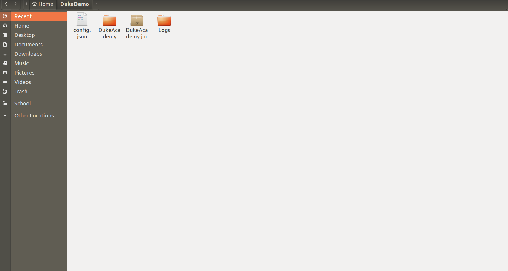

By: CS2103T-F14-1 Since: Aug 2019 Licence: MIT
- 1. Introduction
- 2. Quick Start
- 3. Features
- 3.1. Viewing help :
help[coming in v1.2] - 3.2. Access Homepage:
home[coming in v1.2] - 3.3. Find question by title :
find[coming in v1.2] - 3.4. Browse by categories:
browse[coming in v1.2] - 3.5. Viewing a question :
view[coming in v1.2] - 3.6. Attempting a question :
attempt[coming in v1.2] - 3.7. Saving your work :
save[coming in v1.2] - 3.8. Submitting your answer:
submit[coming in v1.2] - 3.9. Hiding the results window:
hideresults[coming in v1.2] - 3.10. Reset your answer:
reset[coming in v1.2] - 3.11. View answers:
answer[coming in v1.2] - 3.12. Exit the application:
exit[coming in v1.2] - 3.13. Timer:
timer[coming in v1.2] - 3.14. Loading new questions:
loadquestions[coming in v1.2]
- 3.1. Viewing help :
- 4. FAQ
- 5. Command Summary
- 6. Question text file format
1. Introduction
DukeAcademy is a coding practice platform that operates entirely on your local machine without the need for an internet connection. Whether you are revising for a test, practicing for a tech interview, or just coding for the sheer joy of it, DukeAcademy gives you access to a wide range of programming problems from various categories. Easily find something that suits your needs and interests and start honing your skills today!
For educators, you can use DukeAcademy as a platform to administer your assignments or practice questions by loading your own questions!
DukeAcademy is optimized for those who prefer to work with a CLI (Command Line Interface) while still enjoying the benefits of a GUI (Graphical User Interface). If you are still unfamiliar with using a CLI (an important skill for all programmers), you can get used to it while working on your coding skills!
2. Quick Start
-
Ensure you have Java 11 or above installed in your Computer.
-
Download the latest DukeAcademy.jar here.
-
Copy the file to the folder which you want to use as the home folder for DukeAcademy.
-
Copy the file to the folder you want to use as the home folder for your Duke Academy.
-
Download a problem set here.
-
Copy the file into the home folder for DukeAcademy.
-
Rename it to “default_problem_set.txt”.
 -
Double-click the file to start the app. The GUI should appear in a few seconds.
-
Type the command in the command box and press Enter to execute it. e.g. typing
helpand pressing Enter will open the help window. -
View the question ID you want to attempt on the left pane. Type
attempt <Qn ID>into the command box to start your DukeAcademy experience. -
Refer to Section 3, “Features” to view our full list of commands.
3. Features
Command Format
-
Words within square braces
[]are the parameters to be supplied by the user e.g. inattempt[id],idis a parameter which can be used asattempt 1. -
Parameters are compulsory.
-
Parameters with
… after them can be entered multiple times. e.g.browse [category]…can be used asbrowse easy linkedlist hashtable recursion(i.e. 4 times), etc.
3.1. Viewing help : help [coming in v1.2]
Opens a window displaying the user guide within the GUI. In the user guide, all available functions within DukeAcademy will be listed in alphabetical order.
Format: help
3.2. Access Homepage: home [coming in v1.2]
Navigates back to the homepage where you can see your progress on the current problem set.
Format: home
3.3. Find question by title : find [coming in v1.2]
Searches for question titles that partially match the keywords entered. Results are displayed in the list window on the left of the GUI.
Format: find [keyword]…
Examples:
-
find binary search tree
Finds and displays all the questions containing the substrings "binary", "search" and "tree" in its title. -
find fizzbuzz
Finds and displays all the questions containing the substring "fizzbuzz" in its title.
3.4. Browse by categories: browse [coming in v1.2]
Browses the list of questions found in the list window on the left of the GUI according to the category specified. Only questions matching the categories will be displayed.
Format: browse [category]…
Examples:
-
browse medium
Finds and displays medium difficulty questions. -
browse hashtable linkedlist
Finds and displays questions on hashtables and linked lists.
3.5. Viewing a question : view [coming in v1.2]
Allows you to preview a question by displaying it in the GUI. The question details will be displayed in the right window of the GUI.
Format: view [id]
Examples:
-
view 2
Displays the question with the id "2" in the right side window of the GUI.
3.6. Attempting a question : attempt [coming in v1.2]
Navigates to a question page where you can attempt to solve the question. The question with the corresponding id will be displayed on the left of the GUI. The GUI will now display a text editor on the right which you can use to input your answer.
Format: attempt [id]

Examples:
-
view 2
Opens the question page displaying the question with the id "2".
3.7. Saving your work : save [coming in v1.2]
Saves your current question attempt. Can only be invoked from the question page.
Format: save
3.8. Submitting your answer: submit [coming in v1.2]
Submits your current answer. Your code will now be compiled and run against the specified test cases. A new window will appear on the right of the GUI to display your results. Can only be invoked from the question page.
Format: submit

3.9. Hiding the results window: hideresults [coming in v1.2]
Closes the results window if it is opened. The question and text editor will expand to fill the remaining space. Can only be invoked from the question page.
Format: hideresult
3.10. Reset your answer: reset [coming in v1.2]
Resets the current saved attempt for a question. The question being reset is the one that corresponds to the id specified. The editor will be empty next time you attempt that question.
Format: reset [id]
Examples:
-
reset 2
Erases the previous answer for the question with the id "2".
3.11. View answers: answer [coming in v1.2]
View the formal answer of a problem. The problem statement will be displayed on the left pane, and the sample code will be displayed on the right. Can only be invoked from the question page.
Format: answer
3.13. Timer: timer [coming in v1.2]
Displays a timer window on the bottom right of the text editor. Helps to simulate an test condition under which the coder is supposed to finish within speculated duration. The timer starts timing the moment a character is entered into the text editor.
Format: timer [time]
Examples:
-
timer 013000
Starts a timer that lasts for 1 hour, 30 minutes, 0 seconds. -
timer 995959
Starts a timer that lasts for 99 hour, 59 minutes, 59 seconds.
3.14. Loading new questions: loadquestions [coming in v1.2]
Loads new questions into the application through a text file. Your text file should be in the format specified below. Your questions will be loaded the next time you open DukeAcademy.
Format: loadquestions [filename]

Examples:
-
loadquestions my_problem_set.txt
Loads the questions from the file "my_problem_set.txt" located in the home directory of DukeAcademy.
4. FAQ
Q: How do I transfer my own problem sets to another computer?
A: Copy the problem set text file into DukeAcademy’s home folder on the other computer and repeat the loadquestions command.
Q: How do I transfer data to another computer?
A: Install the app in the other computer and overwrite the empty data file it creates with the file that contains the data of your previous DukeAcademy folder.
Q: What is the format of problem setting?
A: It should contain the following: problem statement, input and output files, difficulty level, solution, algorithm category. Check out default_problem_set.txt for reference.
5. Command Summary
-
Viewing Help:
help -
Home:
home -
Find by question title:
find [keyword] -
Browse by category:
browse [category] -
View: view:
view [id] -
Attempt a question:
attempt [id] -
Save:
save -
Submit:
submit -
Hide results:
hideresults -
Reset:
reset -
View answer:
answer -
Exit: `exit
-
Timer:
timer [hhmmss] -
Load questions:
loadquestions [filename]